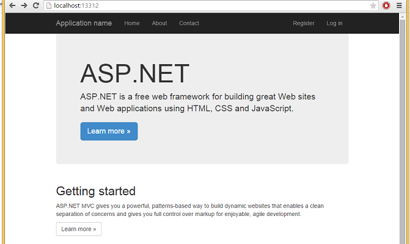

Opprette prosjekt
Åpne Visual Studio og velg:
File => New => Project
Visual C# => Web => ASP.NET Web Application

Velg MVC. Velg vekk host in the cloud.
Velg Add unit tests
Kjøre løsningen
Trykk F5 eller CTRL + F5
F5 kjører løsningen med Visual Studio debugging. Det betyr at dersom koden feiler vil Visual Studio si ifra og vise feilmeldingen på det stedet i koden den oppstod.
CTRL kjører løsningen uten debugging.
Siden skal nå ha åpnet seg og vise innholdet som kommer som standard med prosjektet
 Den observante utvikler vil legge merke til at prosjektet allerede inneholder helt ok CSS. Dette kommer fra frontend-rammeverket Bootstrap som er inkludert i prosjekt-templaten. Vi kan selvfølgelig droppe dette, og skrive vår egen CSS - eller vi kan skrive vår egen CSS i tillegg til Bootstrap. I denne introduksjonen beholder vi det bare som det er.